| |
JAPAN 2018!!! =)
Osaka Universal Studios Japan Parque Espana
Nagashima Spaland
Hiroshima & Kyoto Tobu Zoo Fuji-Q Highlands
Tokyo Joypolis Tokyo Dome City Yomiuriland Sea Paradise Hamanako Pal Pal Tokyo Disney Resort Yokohama Cosmoworld
Toshimaen
All right. Moving onto the next park. Here's some Waffle Cookie advertising at the Shin-Osaka train station.
Hmm. The double up escelator is cool, but after Parque Espana, not impressive.
All right. This morning's drink is Fanta Mango. And now, it's time to talk about Fanta. Anyone who's read any of my Europe updates will know that I LOVE European Fanta, and how it's so much better than American Fanta. Which got me to thinking. How's Japanese Fanta? Is it amazing like European Fanta, or is it just good like American Fanta? Well, Japanese Fanta is its own freaking thing, not like either of them. Mainly in the sense that Japanese Fanta has a bunch of flavors that you can't get in America or Europe. Hell, they don't even HAVE regular Orange Fanta here. They have tons of flavors, but standard Orange Fanta, they don't have that. Regardless of whether you want the standard American version, or the amazing European version, you aren't gonna find it here. For instance, right now, I have Fanta Mango. Good, but not my favorite flavor. But there's so many to choose from, including one Fanta flavor, that anyone who has been to Japan or studies Japanese soft drinks knows what I'm talking about. ;)
 You know, something tells me that the Catch Your Phone In Front of a Moving Train Challenge is a bad idea. ;)
You know, something tells me that the Catch Your Phone In Front of a Moving Train Challenge is a bad idea. ;)
And there's the reason we woke up at 5 am and got on all these super early morning trains.
 I believe the coaster enthusiast in me is very happy to see this place. A lot of things in this photo that I'm looking foreward to. =)
I believe the coaster enthusiast in me is very happy to see this place. A lot of things in this photo that I'm looking foreward to. =)
Hi White Cyclone remains. How's the RMC Conversion going?
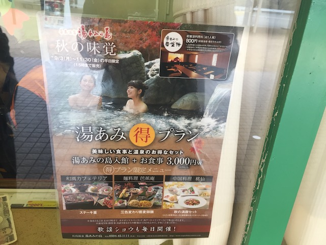
Where exactly is the naked chicks in a hot tub ride? I keep seeing ads of it at Nagashima Spaland, but never actually saw it. Oh well. That's what internet porn is for. =P
Time for us to conquer Nagashima Spaland.
 OK. Let's get the low capacity stuff out of the way. First up, Arashi.
OK. Let's get the low capacity stuff out of the way. First up, Arashi.
 You know, it's amazing. Six Flags has been adding these S&S Free Spins pretty much everywhere. And despite this, I had yet to hit one. To the point that my first one is gonna be in f*cking Japan!
You know, it's amazing. Six Flags has been adding these S&S Free Spins pretty much everywhere. And despite this, I had yet to hit one. To the point that my first one is gonna be in f*cking Japan!
 HOLY SH*T!!! ARASHI IS F*CKING AMAZING!!! IT FLIPS SO DAMN MUCH!!! Seriously, this thing is essentially Japanese Insane, and is on par with it. And considering how much I liked Insane, that's really good news.
HOLY SH*T!!! ARASHI IS F*CKING AMAZING!!! IT FLIPS SO DAMN MUCH!!! Seriously, this thing is essentially Japanese Insane, and is on par with it. And considering how much I liked Insane, that's really good news.
 Honestly, I'm now afraid of riding Batman @ SFDK this summer, because Arashi is so good, that I'm assuming that Batman @ SFDK is going to be to Arashi what Green Lantern is to Insane.
Honestly, I'm now afraid of riding Batman @ SFDK this summer, because Arashi is so good, that I'm assuming that Batman @ SFDK is going to be to Arashi what Green Lantern is to Insane.
OK. I know there's two of these things, but only one side is running (It's all one credit). So yeah. Get it out of the way.
*Sigh* It's not that bad, but damn it. Waiting in a line like this for the Wild Mouse is not fun.
You know how the European Mice are really mean, agressive, insane, and brutal? The Japanese Mice are not like that. They're watered down just like they are in America. =(
 Aww. The next low capacity ride is closed for the day. Please don't be closed all day. Please don't screw us out of what looks to be a very intersting and unique coaster.
Aww. The next low capacity ride is closed for the day. Please don't be closed all day. Please don't screw us out of what looks to be a very intersting and unique coaster.
Acrobat too!? Grr. Not impressed right now. >=(
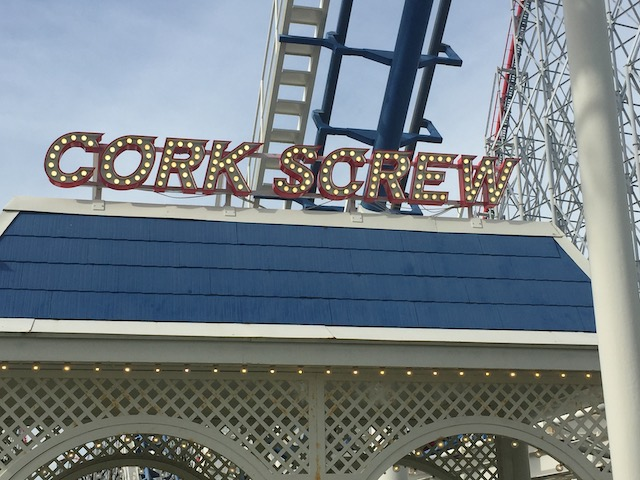
Well, at least Corkscrew is open. Yay I guess.
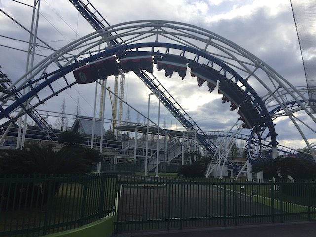
It's just an Arrow Corkscrew, nothing special. But at least its well maintained.
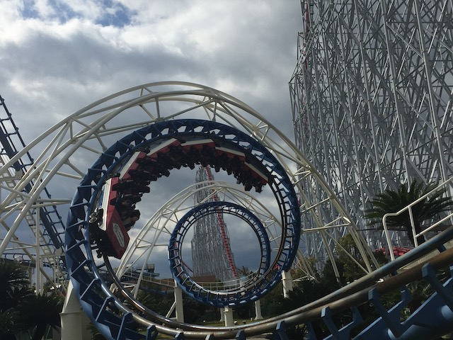
And you do have to admit. They are very pretty rides.
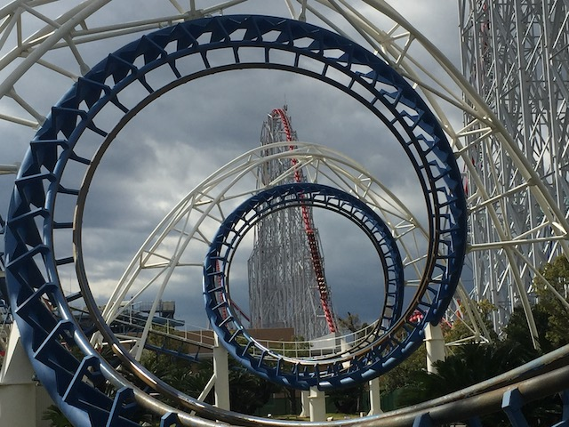
Steel Dragon 2000 through Corkscrew.
 Oh yeah! How could we forget about Steel Dragon 2000!?
Oh yeah! How could we forget about Steel Dragon 2000!?
 Well actually, we didn't. We just didn't get to it until now since A: We wanted to hit the low capacity rides first. B: Logan wanted to get other rides out of the way to ensure that Steel Dragon 2000 would be his 600th credit.
Well actually, we didn't. We just didn't get to it until now since A: We wanted to hit the low capacity rides first. B: Logan wanted to get other rides out of the way to ensure that Steel Dragon 2000 would be his 600th credit.
OK. Let's talk about the operations here. I know the operations for Steel Dragon are not good. I get that the park isn't very crowded aside from Steel Dragon 2000, as yeah. The operations work for pretty much all the rides in the park. But when Steel Dragon 2000, your most popular ride, gets a line, not a huge crazy line, but a line nonetheless, that's generlly a sign that maybe you shouldn't be running one train. Just a hint.
 Hmm. There's something weird about the Steel Dragon trains that I can't put my finger on.
Hmm. There's something weird about the Steel Dragon trains that I can't put my finger on.
Oh yeah. Despite being a Morgan Giga, the ride has B&M Hyper trains. Weird choice, but...I like the B&M Hyper trains.
Steel Dragon 2000 is a lot of fun, but it's nothing really special. Least favorite of the 3 Gigas I've done.
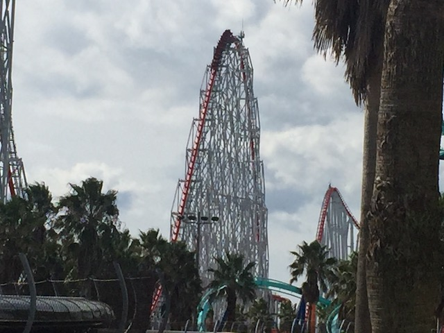
Fury 325 > Millenium Force > Steel Dragon 2000. Feels weird to think that I rode Millenium Force & Steel Dragon 2000 in the same year.
Steel Dragon 2000 is basically one of the Morgan Hyper Coasters. You know Steel Force, Mamba, & Wild Thing. It's one of those rides. Only 100 ft taller, and faster.
And to be fair, it does have a little more airtime than the Morgan Hypers. So yeah. It's the best of the bunch. But it stil feels like the same general ride, just a little faster.
Now I almost NEVER get onride photos. But hey. I'm here with Logan, and if he wants the digital onride photo, why not. Plus, it is #600 for you. ;)
 YAY!!! ULTRA TWISTER OPENED UP!!! SO HAPPY!!!
YAY!!! ULTRA TWISTER OPENED UP!!! SO HAPPY!!!
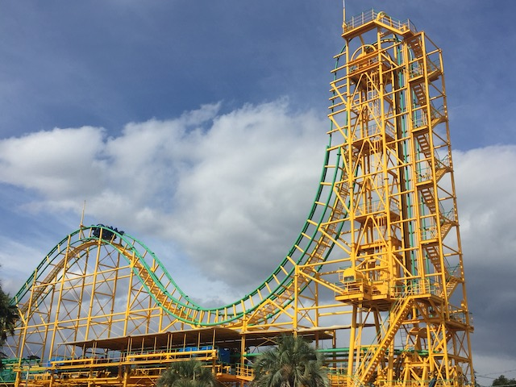
So Ultra Twister is...an Ultra Twister. A rare brand of coaster that is dying off, and only exists in Japan. It looks very weird, and I have to admit. They're a ton of fun.
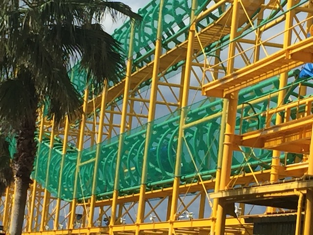
It may look weird and not do a ton of stuff. And yeah. It's true. But damn it! It's just so quirky, you can't help but smile on this ride.
Honestly, with how much I enjoyed the normal Ultra Twister, I now have a HUGE desire to get on the Dive Loop Ultra Twister @ Rusutsu Highlands. Seriously, Ultra Twister is already really fun. That dive loop and the inline twists afterwards just looks INSANE!!! I think that after this trip, Dive Loop Ultra Twister is now the only coaster left in Japan that I haven't ridden that is on my bucket list. Well, whenever I do get back to Japan, Rusutsu Highlands is guaranteed to be part of that trip.
OK. What the hell is Bobkart?
 So Bobkart looks like an alpine slide. And...yeah. It's basically a powered alpine slide.
So Bobkart looks like an alpine slide. And...yeah. It's basically a powered alpine slide.
Do not forget about this ride. It seriously is a ton of fun.
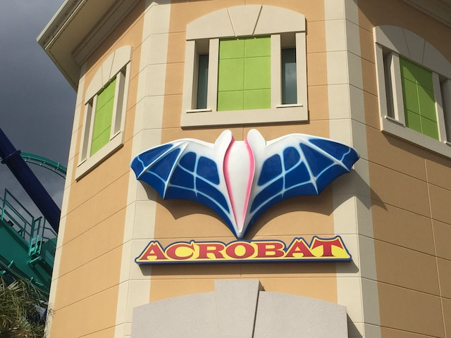
And in even more good news, Acrobat also opened up! YAY!!!
 So Acrobat is a clone of Manta @ Sea World Orlando. Except, I haven't been to Sea World Orlando. So again, I get on the Japanese version before the popular American version (I'm really overdue to go back to Florida).
So Acrobat is a clone of Manta @ Sea World Orlando. Except, I haven't been to Sea World Orlando. So again, I get on the Japanese version before the popular American version (I'm really overdue to go back to Florida).
 I know back in America, Tatsu vs Manta is a popular debate. And while I haven't done Manta, I can now partake in the debate thanks to Acrobat. I'll answer that later, but just know. It's pointless to debate which is better since Flying Dinosaur > Both Tatsu & Acrobat.
I know back in America, Tatsu vs Manta is a popular debate. And while I haven't done Manta, I can now partake in the debate thanks to Acrobat. I'll answer that later, but just know. It's pointless to debate which is better since Flying Dinosaur > Both Tatsu & Acrobat.
Peekaboo. I see you Hakugei track. =P
All right. It's Halloween (Best Halloween ever. Much better than any Halloween party I've done or even seeing that Andrew W.K Concert. I'm in f*cking Japan), so we gotta do something scary. So yeah. We're doing the parks haunted house. And it was...intersting. It wasn't scary, but to be fair, it focused on the stuff that really scares Japanese people and incorporated a lot of the folklore from the country. So it was still really cool to check out. Highly recommended by Incrediblecoasters.
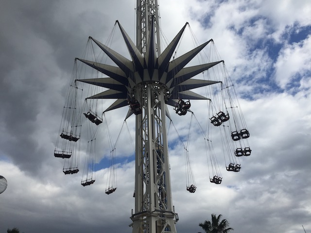
Oh no! We missed the Starflyer at Nagashima Spaland! That was our biggest priority for going to this park! What a shame! =P
 I see a burger and I want to paint it black.
I see a burger and I want to paint it black.
Yep. The final soda that I'm gonna talk about in detail is Fanta Melon. HOLY CRAP!!! SO GOOD!!!
So yeah. Fanta Melon is REALLY popular in Japan. It's a flavor that you for the most part, can only find in Japan. And while it may sound really weird at first, it's SO GOOD!!! Honestly, I think I might like it even more than European Fanta. So hard to choose between the two. But yeah, Fanta Melon doesn't even really taste like melon. It's got a super sweet, almost bubble-gum soda taste. But it's also got a mild hint of generic fruitiness to it, to let you know that this is Melon Soda, and not just Bubblegum Soda dyed green. I know it may sound weird for me to praise Melon Soda this much since I'm not really huge on Bubblegum Soda, but for some weird reason, Fanta Melon just tastes amazing. And even stranger, I never saw the stuff bottled once during my entire Japan Trip. I was only able to ever order the drink on tap. Was still able to get the drink a lot, but I couldn't get it bottles like I could with Pocari Sweat & Match.
 All right. We've still got some cool coasters to ride. For instance, Looping Star.
All right. We've still got some cool coasters to ride. For instance, Looping Star.
Yeah. Looping Star is...a Looping Star (Rides at Nagashima Spaland have such creative names).
HOLY CRAP!!! These rides are MUCH better than I remembered. Seriously, I don't remember this being this agressive at either Zoomarine or Frontier City.
Seriously, this thing was really forceful. It almost felt like Collosus: Fire Dragon, only without the 2nd loop.
We really need more of these rides built. Because damn it! Looping Stars are really fun.
Fair warning. These Looping Stars get some really strong laterals. So look out.
Hmm. It's gotta be called Looping Star for a reason. But I just can't quite figure out what that reason is.
Yes. I would like several rerides on the Looping Star please.
HOLY SH*T!!! THEY STILL HAVE AN INTAMIN 1ST GENERATION FREEFALL HERE!!!
So yeah. Intamin 1st Generation Freefalls aren't as big as the newer drop towers, but something about these rides is just a bunch of terrifying agressive fun. Add in the fact that these rides are incredibly rare nowadays, and you've got a winner.
If you want more info on why these Intamin 1st Generation Freefalls kicked ass, check out our raw footage of Freefall, way back in the early days of Incrediblecoasters, back when that ride existed at Six Flags Magic Mountain.
"We already got the credit this morning! So we don't have to stand in line with you guys!"
Gotta admit. Nagashima Spaland has a nice flat ride collection.
OK. Here's an intersting flat ride to check out. It looks like Looper @ Knoebels. Only this one is better. Shockingly enough, because it has OTSRs. Because having that much weight on your thighs, isn't really fun. But this is a fun ride.
 All right. Time to get on another classic Schawrzkoph.
All right. Time to get on another classic Schawrzkoph.
You know? It's Halloween. Why not have some zombies in the Shuttle Loop's station? =)
Much like Looping Stars, it's a shame that these rides are becoming more and more rare (But luckily, one of these are at one of my home parks).
Hey Knotts Berry Farm! How's it going?
*Sigh* I know that you're a credit whore Logan. I'm one too. But...this is NOT a credit. It's a powered coaster. And it wasn't even a good one either!
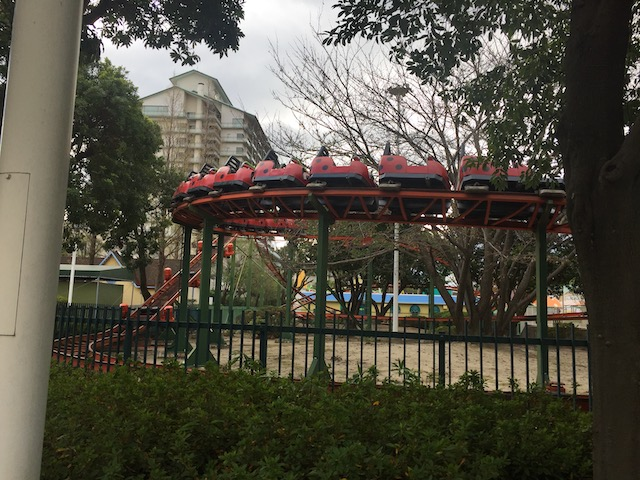
Hey! This ride may be sad and pathetic, but at least it's a f*cking credit! So at least riding it has a purpose! A very nerdy purpose, but still a purpose!
Sorry. I know I'm really bad about this, but can I borrow a pencil?
 Not sure if play hills like this are a thing at other parks, but it looks cool here.
Not sure if play hills like this are a thing at other parks, but it looks cool here.
Just one more coaster left for us to do before we complete Nagashima Spaland.
I know these weird Jet Coasters are really popular around Japan, but surprisingly, this was the only one of the entire trip.
 I do really like how they theme the straight track as going across a bridge over the water. That's pretty cool.
I do really like how they theme the straight track as going across a bridge over the water. That's pretty cool.
Oh. You've got a S&S Combo Tower here? Yawn. Can we go back to the Intamin 1st Generation Freefall?
Hey look! It's one of those huge monster pirate ships that are popular across Japan! Let's see if these are any good.
Meh. They may look cool. But honestly, they're no better than a standard ordinary pirate ship.
Hello puny regular pirate ship.
 You know, those Water Whips really are a lot of fun. I wish more parks would have them.
You know, those Water Whips really are a lot of fun. I wish more parks would have them.
 Considering how this ride gave us 16 flips in a row during just those bunny hops at the very top before it began dropping (See why I like this ride so much?), you can tell that it's time for an Arashi marathon.
Considering how this ride gave us 16 flips in a row during just those bunny hops at the very top before it began dropping (See why I like this ride so much?), you can tell that it's time for an Arashi marathon.
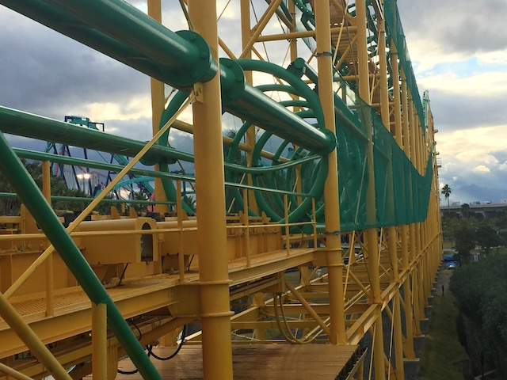
And we gotta have more rides on Ultra Twister. Those inline twists are disorienting and a lot of fun.
Hmm. Something's going on with Hakugei.
HOLY SH*T!!! THEY'RE F*CKING TOPPING OFF HAKUGEI RIGHT NOW!!!
So yeah. We're coaster nerds all pretty much orgasming at this coaster construction right now. So fair warning. You're going to see a lot of Hakugei construction photos.
So I have no idea what the layout of this ride is supposed to be, all I've seen is the pre-lift.
Looks like it's gonna have some Twisted Collosus style bunny hops here. Should be a ton of fun.
You know. These Giant Ferris Wheels are all over Japan. Maybe if we ride it, we could...
Yes. We are nerdy enough to ride the giant ferris wheel for the sake of Hakugei construction photos.
Some of you may be wondering why I didn't hold off and come to Japan when they opened up Hakugei. Mainly, because I've been trying to do Japan for YEARS and only NOW was able to get here. And while it's true that waiting could've gotten me Hakugei, waiting can also cost you oppertunities. For instance, because of having to put the trip off due to bad finances, I wound up missing Space World (Still unhappy about missing it), let alone other random miscellanious things that just close at random (Hi Aqua Stadium). Not to mention, it just gives me another thing to look foreward to (As if I need more reasons to come back to Japan).
"Come on men! Get back to work! We've got an RMC to construct!"
Come on. You're almost there. Just snap it into place.
Ariel view of Hakugei's pre-lift section.
Just enjoying the view from the top of the Giant Ferris Wheel.
If you get sick of looking at Nagashima Spaland, don't worry. Turn around and check out the view of Kuwana then.
Wild Mouse from the Giant Ferris Wheel.
"Shh! If you're real quiet, you can hear the Ker-Chunk from here!"
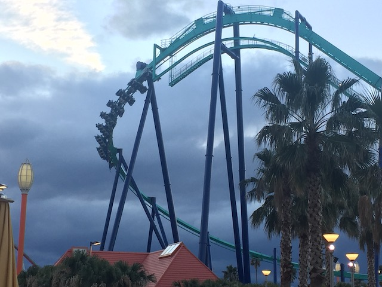
Might as well close out the night with a couple rides on Acrobat.
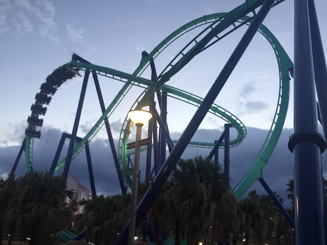
OK. Let's answer Tatsu vs Manta...I mean Acrobat. Tatsu clearly has the superior Pretzal Loop and that is the most forceful part of both rides. But Acrobat is a better overall ride. But again, moot point since...Flying Dinosaur exists.
 I like how they just completely copied and pasted Manta. Right down to the freaking water splash element. =P
I like how they just completely copied and pasted Manta. Right down to the freaking water splash element. =P
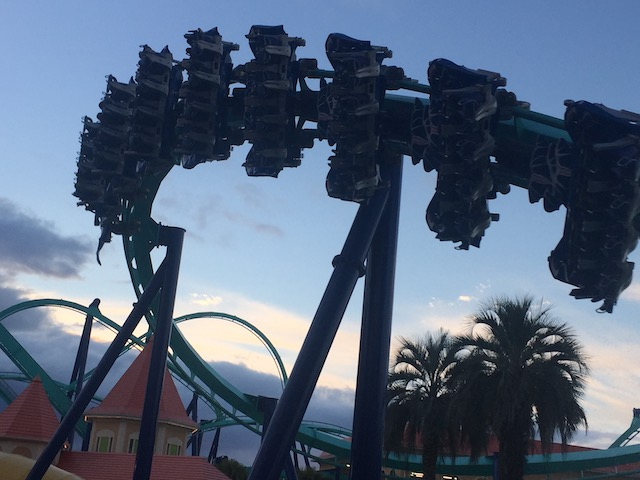
Not the best B&M Flyer, but still a really fun ride.
I love this country.
Sadly, we couldn't get Steel Dragon rerides since it broke down in the afternoon and didn't reopen the rest of the day. Bummer, but not a huge deal. And this is why you always get insurance rides on your most important rides in the park. It's not the first time an insurance ride saved our ass.
 Bye Nagashima Spaland. I really enjoyed your park, your coasters, and look foreward to coming back for Hakugei when I do my next Japan trip.
Bye Nagashima Spaland. I really enjoyed your park, your coasters, and look foreward to coming back for Hakugei when I do my next Japan trip.
Just in case you want a little Pokemon capsule. You can easily just grab one in Japan.
I see you zoo ad that's plastered all over the subway stations in Osaka. ;)
All right. We just got back from Nagashima Spaland, it's Halloween night, and I'm in Osaka. What to do?
Hey! We haven't seen the Tsutenkaku tower! I know I'm not the biggest skyscraper fan, and I didn't actually go inside it. But it was still cool to check out the outside of the tower and explore the general area. Especially considering it's one of the biggest landmarks in Osaka.
Best Halloween Ever!!!
Hiroshima & Kyoto
Home
|